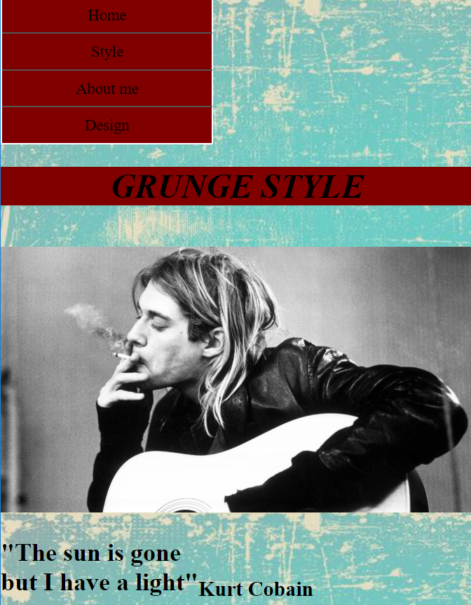

Basic Web
Probably the main goal of this theme was to create a webpage which is responsive to the diffrent screen sizes of devices . Every student had recieved a style which was the main aspect of the page. I`ve got grunge style which is really interesting one. I tried to use typically grunge style colors and also to make it readable at the same time. I`ve also created a logo for the style but I`m not very proud of it . It was my first responsive website so sincerely I am not very proud about the design.
01.04.01. Responsive website
